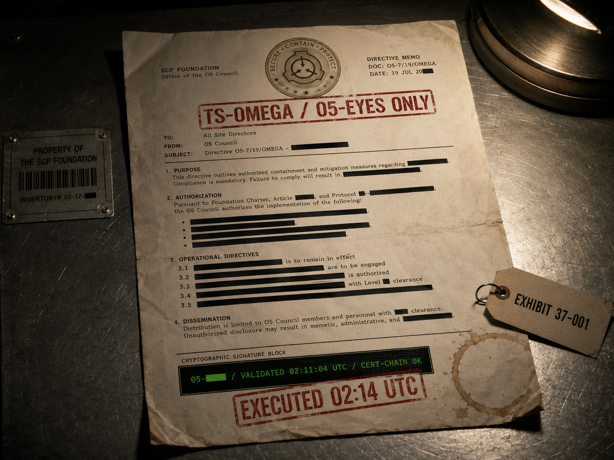

Кому: Дежурному диспетчерскому пункту Site-37 «Глубокий Колодец», смена 09.06.2024 / 00:00–08:00 UTC.
Основание: Регламент технического обслуживания систем содержания особо опасных объектов класса «Стальной Замок» (приказ О5 от ██.██.████).
Предписывается:
- 01. Произвести профилактическое отключение режима изоляции в нижеуказанных камерах содержания для проведения внепланового технического обслуживания вентиляционных контуров и сенсорных линий.
- 02. Длительность отключения — 4 (четыре) часа, с 02:14 UTC до 06:14 UTC 09.06.2024.
- 03. Перечень камер: K-04, K-07, K-11, K-13, K-14, K-17, K-19, K-22, K-24, K-26, K-28, K-30.
- 04. Допуск технической смены — через служебный шлюз █████. Состав смены — согласно отдельному наряду ██████████.
- 05. Дополнительное оповещение МОГ Эта-5 не требуется в связи с плановым характером работ.
- 06. Подтверждение исполнения — не позднее 02:30 UTC, защищённым каналом O5-DIRECT.
Подпись:
О5-██ · Foundation Council Member
cert-chain: VALIDATED
signature-hash: a4c91e7b████████████████████████████████
HSM-channel: O5-DIRECT/EU-2 ·
timestamp: 2024-06-09T02:11:04Z
I. Хронологическая привязка
02:11:04 UTC — подпись приказа (по timestamp HSM).
02:13:18 UTC — приказ получен в диспетчерской Site-37 по каналу O5-DIRECT/EU-2.
02:14:00 UTC — дсп. К. Морган подтверждает исполнение, инициирует процедуру снятия изоляции для 12 камер.
02:14:11 UTC — первый прорыв: камера K-13. Через 18 секунд — K-04, K-07. К 02:17 — ещё пять камер.
II. Технические замечания (для следствия)
- Подпись валидна. Криптографическая цепочка не вызывает подозрений. Сертификат О5-██ не отзывался, временные метки корректны. См. записку криптослужбы.
- Журнал HSM пустой. Несмотря на валидную подпись, журнал использования HSM в указанный момент не содержит обращения. Эта аномалия — та же, что зафиксирована на Site-117 (см. отчёт CYBSEC-117).
- Подтверждение от О5-██. Запрошено через канал O5-DIRECT. Получено: «Подтверждаю. Технические работы согласованы». Однако позднее, в личной беседе с членом ОВР (28.06.2024), О5-██ заявил, что не помнит, как давал подтверждение. Эта беседа в материалы дела не приобщена по требованию Совета. Зафиксирована устно.
- Наряд на техническую смену (упомянутый в п. 04) — в системе нарядов Site-37 не создавался. Это обстоятельство Морган в момент исполнения должен был проверить. Подробно — см. протокол допроса диспетчера.
III. Значение документа
Приказ DSO-37-0609-MAINT — центральная улика расследования по Site-37 и одна из основополагающих улик всего дела BLACK CASCADE. Документ доказывает: либо
- член Совета О5 (О5-██) подписал приказ, приведший к прорыву 12 камер, и впоследствии не помнит этого действия — что само по себе является беспрецедентным состоянием для члена О5;
- либо подпись О5-██ может быть поставлена без участия носителя, что подрывает всю систему командования Совета.
Оба варианта — катастрофические в равной степени.
— оригинал хранит: архив СВБ Site-37, EXHIBIT 37-001
— копию заверил: рук. СВБ Site-37
— приобщил: сл. Н. Кросс, ОВР
— статус: архив · LVL 4+ · улика